收录于合集


文 恒大研究院 任泽平 罗志恒 华炎雪
导读
中美贸易战爆发前后，关于中美竞争力的比较主要有三种观点：1） 过度膨胀派 ，认为中国综合国力已经超越美国，中国有实力全面挑战美国；2） 过度悲观派 ，否定中国制度、文化，认为改革进入深水区而难以推进，内忧外患导致中美差距只会越来越大；3） 理性客观派 ，主张全面、客观、理性分析中美的竞争力，认为通过进一步改革开放,中国有可能实现高质量发展，持续追赶美国，不断改善民生，迈向发达国家行列。
中美的差距有多大？体现在哪些方面？ 本文从经济实力方面客观分析中美差距，肯定进步，正视问题。
摘要
四十年来，受益于改革开放，中国经济社会发展取得举世瞩目成就，占全球经济份额上升到16%，中美GDP之比上升到66%。第一， 1978-2018年中国经济总量从不到1500亿美元增长至 13.6万亿美元 ，从低收入国家迈入中等偏上收入国家行列，占美国GDP比重从6.3%上升到66.3%，占全球经济规模比重从1.8%增长到16.1%， 对全球经济增长的拉动从2%增长至约30% 。四十年年均实际增速为9.5%，同期美国和日本仅为2.6%和2%。假定中国GDP年均增速6%，美国增速2%， 2027年即十年后中国GDP总量预计将赶超美国 。 第二， 工农业生产能力快速发展，资源从短缺到丰富。 1978-2018年，粮食总产量翻一番，工业增加值增长了187倍，工业增加值为全球第一。铁路、公路里程分别增长4.5倍和1.5倍,其中高铁占世界高铁总量2/3以上，建成全球最大移动互联网。 第三， 货物贸易居全球第一，占全球12.8%。2018年实际使用外商直接投资1350亿美元，较1984年增加106倍。 第四， 外汇储备连续十三年全球第一。 第五 ， 城镇化率攀升至59.6%，进入城市群都市圈发展阶段。四十年来，就业规模增长超3亿，从第一产业持续向二三产业转移，但第一产业就业人员占比仍高于第一产业占GDP比重20.2个百分点。
同时，我们要正视不足，中国人均GDP仅为美国的16%，在生产效率差、产业结构、金融发达程度、城市化水平、企业竞争力、科技教育文化、居民生活等方面与美国比仍有较大差距及发展空间。第一，中国人均GDP仅相当于美国的16%。第二， 中国全要素生产率、劳动生产率仅相当于美国的43%和12%， 每单位能耗创造的GDP低于美国和世界平均水平。 第三， 消费对我国经济的贡献度上升，但投资仍占较大比例，美国为消费驱动型经济。 第四， 中国第三产业低于美国30个百分点，但金融业占比略超美国。农业占比偏高，但效率偏低，我国广义粮食自给率84%低于美国的131%。中国工业产能利用率整体低于美国,但高技术行业产能利用率高于美国。中国的钢铁产量约为美国的10倍。 第五， 虽然货物贸易全球第一，但是 服务贸易仍是逆差 。2018年中国服务贸易逆差2582亿美元，其中对美服务贸易逆差据美方统计为405亿美元，占美国服务贸易顺差的15%。 第六， 中国以间接融资为主，美国以直接融资为主，中国金融自由度全球排名靠后，货币超发严重，股票市值约为美国的1/6，全球外汇储备中美元占比高达61.7%，人民币占比仅为1.9% 。 第七， 中国进入世界500强的数量比美国少6家，但国企多民企少，集中在资源垄断性行业及金融部门 ， 美国在IT科技生命健康领域上榜企业较多 。 第八， 中国城市化率低于美国23个百分点，城市圈（群）的集聚效应低于美国。 第九， 中国耕地和水资源低于美国，能源自给率逐年下滑，能源进口占比约为美国的2倍。我国耕地面积为美国的78%，人均耕地面积为美国的19%，人均可再生水资源为美国的23%。原油产量及自给率仅相当于美国的1/3和1/2。
在看到成就和差距的同时，我们要清醒深刻地认识到中国经济发展的巨大潜力和优势，只要下决心推动新一轮改革开放，最好的投资机会就在中国： 中国有全球最大的统一市场（14亿人口），有全球最大的中等收入群体（4亿人群）；中国的城镇化进程距离发达国家仍有20个百分点的空间，潜力大；中国的劳动力资源近9亿人，就业人员7亿多，受过高等教育和职业教育的高素质人才有1.7亿，每年大学毕业生有800多万，人口红利转向人才红利；中国的新经济迅速崛起，独角兽数量仅次于美国；中国GDP增速6%以上，是美国的2-3倍；新一轮改革开放将开启新周期，释放巨大活力。
中国必须立足于国情，客观、理性地看待与美国的差距，大力度推进改革开放，提高综合国力。六大改革建议： 1）建立高质量发展的考核体系，鼓励地方试点，调动地方政府积极性；2）全面放开汽车、金融、石油、电力等行业管制，竞争中性，调动企业家积极性；3）以中美贸易谈判为契机，降低关税、放开行业投资限制、加强知识产权保护，积极推动建立中美自贸区，调动外资积极性；4）大规模减税降费，从碎片化、特惠式减税转向一揽子、普惠式减税；5）大力发展多层次资本市场，减少行政干预的同时加强法治监管，鼓励并购重组，推动以信息披露、严惩重罚、退市制度等为核心的注册制，调动新经济和PE/VC/风投的积极性；6）建立居住导向的住房制度和长效机制，关键是人地挂钩和金融稳健。
目录
1 改革开放四十年，中国经济社会发展取得举世瞩目成就
1.1 中国经济在过去40年年均实际增速达9.5%，GDP总量占全球比重已达16%，相当于美国的66%
1.2 工农业生产能力快速发展，资源从短缺到丰富
1.3 货物贸易居全球第一，占全球12.8%
1.4 外汇储备连续十三年全球第一
1.5 城镇化率攀升至59.6%，进入城市群都市圈发展阶段
2 中国在人均GDP、生产效率、产业结构、企业竞争力、金融自由度、城市化水平等方面与美国比仍有差距
2.1 人均GDP：差距巨大，中国仅为美国的16%
2.2 经济产出效率：中国全要素生产率、劳动生产率均不及美国，每单位能耗创造的GDP低于美国和世界平均水平
2.3 投资与消费：消费对我国经济的贡献度上升，但投资仍占较大比例；美国为典型的个人消费驱动型经济
2.4 产业结构：中国第三产业低于美国30个百分点
2.5 国际贸易：中国的服务贸易为逆差，美国服务贸易顺差
2.6 金融：中国以间接融资为主，美国以直接融资为主，中国金融自由度全球排名靠后，货币超发严重，股票市值约为美国的1/6，全球外汇储备中美元占比高达61.7%
2.7 企业竞争力：中国进入世界500强的数量比美国少6家，国企多民企少，集中在资源垄断性行业及金融部门，美国在IT科技生命健康科技领域上榜企业较多
2.8 人口与就业：中国人口总量为美国的4.3倍，但老龄化率增速较快，未富先老
2.9 城市：中国城市化率低于美国23个百分点，城市圈（群）的集聚效应低于美国
2.10资源能源储备：中国人均耕地和水资源少于美国，能源自给率逐年下滑，能源进口占比约为美国的2倍
2.11财政：中国宏观税负略高于美国，政府债务率低于美国，考虑到隐性债务较高和社保水平偏低，财政压力较大
2.12军费：美国军费开支全球第一，为中国的3倍
3 最好的投资机会就在中国
3.1 中国14亿人，拥有全球规模最大的统一市场和中等收入群体
3.2 劳动力资源近9亿人，接受高等教育和职业教育的高素质人才达1.7亿，人口红利转向人才红利
3.3 创新创业十分活跃，中国新经济独角兽企业数量占全球28%，仅次于美国
3.4 以六大领域为突破口，新一轮改革开放将开启新周期
正文
1 改革开放四十年，中国经济社会发展取得举世瞩目成就
四十年来，受益于改革开放，中国在各方面取得巨大进步，中国经济总量占全球经济份额不断扩大，与美国的差距不断缩窄，在产业结构、贸易、企业竞争力以及城镇化进程方面发展迅速。
1.1 中国经济在过去40年年均实际增速达9.5%，GDP总量占全球比重已达16%，相当于美国的66%
改革开放四十年，中国经济总量从不到4000亿增长至90万亿，从低收入国家迈入中等偏上收入国家行列。 1978年中国GDP仅3679亿元，2018年GDP为约90万亿元，增长约245倍，年均名义增速为14.7%；实际增长35.8倍，年均实际增速为9.5%，同期美国和日本实际增速为2.6%和2.0%。以美元现价计价，1978年中国GDP为1495亿美元，2018年为13.6万亿美元，年均增速为11.9%，而同期美国和日本为5.6%和4.1%。从世界排名看，1978年中国经济总量居世界第11位,此后于2005年超过法国，2006年超过英国，2008年超过德国，2010年超过日本并跃升为全球第二大经济体。从占比看，1978年中国GDP总量占世界比重为1.8%，2018年占比16.1%。
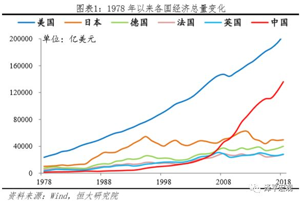
中国与美国GDP规模差距快速缩小，相当于美国的66%，预计2027年中国GDP总量赶超美国。 2018年中国经济规模达13.6万亿美元，经济增速6.6%，占世界生产总值的16%。美国经济规模为20.5万亿美元，经济增速2.9%，占世界生产总值的24%。如果中国按照6%左右的增速增长，预计到2027年前后，中国有望成为世界第一大经济体。
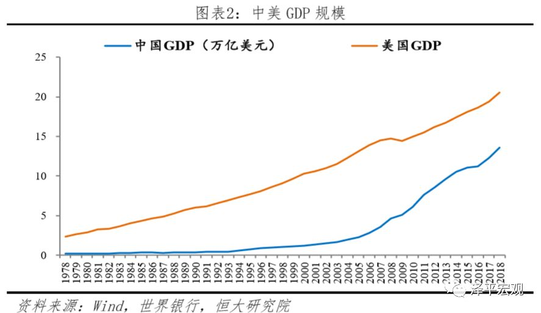
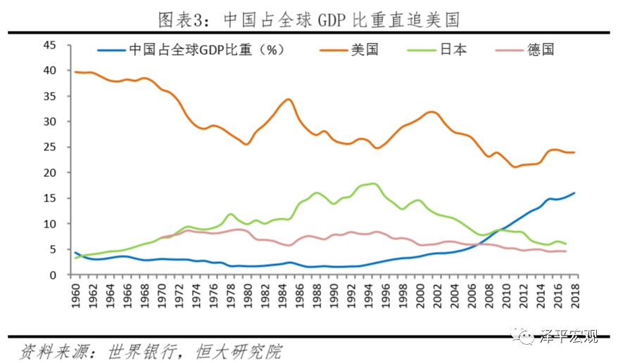
以购买力平价计算的中国经济规模已为全球第一。 2014年中国经济规模（PPP计价）为18万亿国际元，首次超过美国，2018年达到25.2万亿国际元，美国为20.4万亿国际元，两者差距在持续扩大。
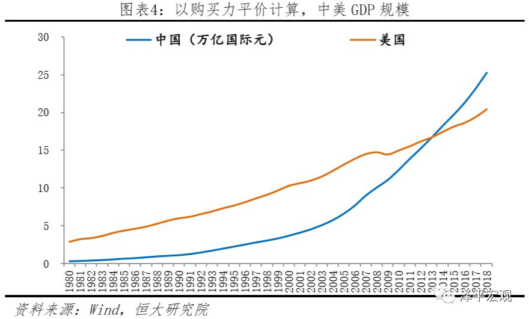
中国是全球经济增长的最大贡献者。 中国对全球经济增长的拉动从1979年的2%上升至2018年的约30%，成为全球经济增长的最大贡献者。中国2018年经济增量1.4万亿美元，相当于澳大利亚2017年的经济总量。IMF预测2018年全球GDP总量增长4.78万亿美元，中国对全球经济增长的贡献率约30%，高于美国的贡献率21.2%。
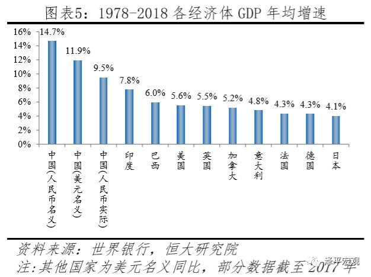
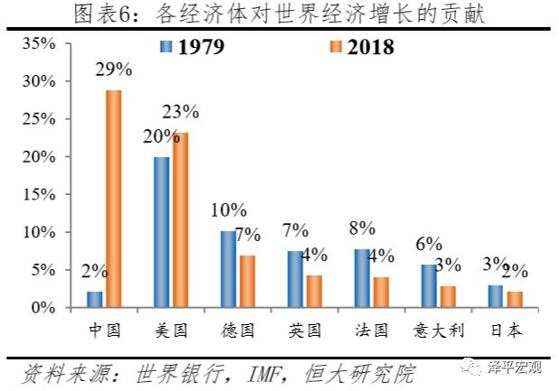
经济结构继续优化，第三产业成为经济增长的首要引擎，消费对经济增长的贡献大幅提高。从产业看， 1978年第一、二、三产业分别占GDP的27.7%、47.7%和24.6%，分别拉动GDP增长1.1、7.2和3.3个百分点；2018年三大产业占GDP的比重分别为7.2%、40.7%和52.2%，分别拉动GDP增长0.3、2.4和4.0个百分点；2018年第三产业占比较1978年上升27.5个百分点，对经济的贡献率提高30.4个百分点，经济增长由主要依靠第二产业带动转向更多依靠第三产业带动。 从最终需求看， 1978年消费支出、资本形成总额和净出口对GDP增长的贡献率分别为38.3%、67.0%和-5.3%，分别拉动GDP 4.5、7.8和-0.6个百分点；2018年，消费、投资和净出口对GDP增长的贡献率为76.2%、32.4%和-8.6%，分别拉动GDP 5.0、2.1和-0.6个百分点，消费对经济的贡献度大幅提高。
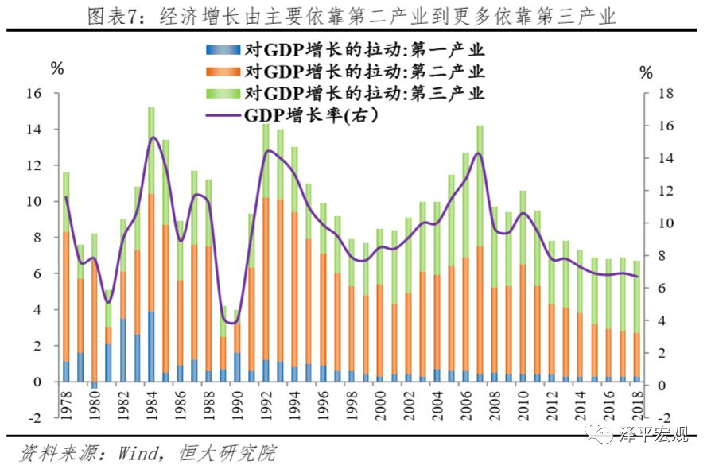
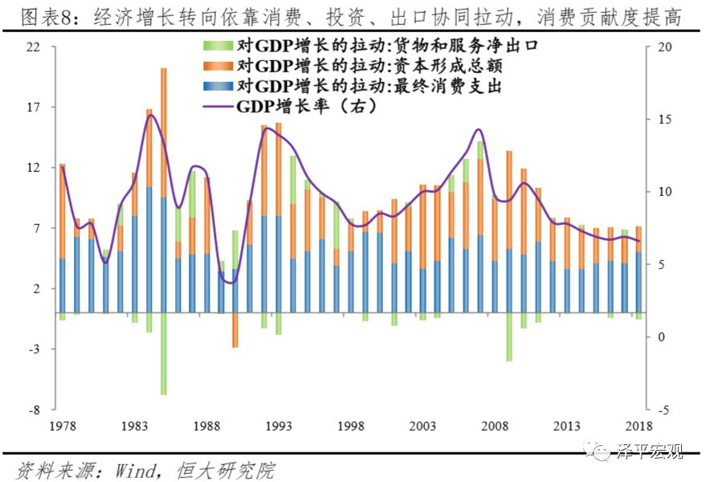
1.2 工农业生产能力快速发展，资源从短缺到丰富
农业和工业生产能力不断提升，基础设施体系建设跨越式发展，物质从短缺到丰富。农业方面， 2018年中国粮食总产量65,789万吨(1.3万亿斤)，较1978年翻一番； 工业方面 ，2018年全国工业增加值30.5万亿元，较1978年增长了187倍；钢材、水泥和天然气等工业品产量分别增长49.1、32.9和10.7倍；汽车产量接近2800万辆，增长超过180倍。从国际比较看，粗钢、煤、发电量、水泥、化肥产量分别由1978年的世界第5位、第3位、第7位、第4位、第3位跃居2016年的世界第一；原油产量由第8位上升到第5位。空调、冰箱、彩电、洗衣机、微型计算机、平板电脑、智能手机等一大批家电通信产品产量均居世界首位。 交通运输建设方面， 2018年末中国铁路营业里程达到13.1万公里,比1978年末增长1.5倍,其中高速铁路达到2.9万公里,占世界高铁总量2/3以上。2018年末,公路里程486万公里,比1978年末增长4.5倍；航空运输量23324百万吨公里，约相当于日本的2倍和美国的56%。 邮电通信方面， 2018年移动电话普及率上升至112.2部/百人，建成全球最大移动互联网，移动宽带用户达13.0亿户。
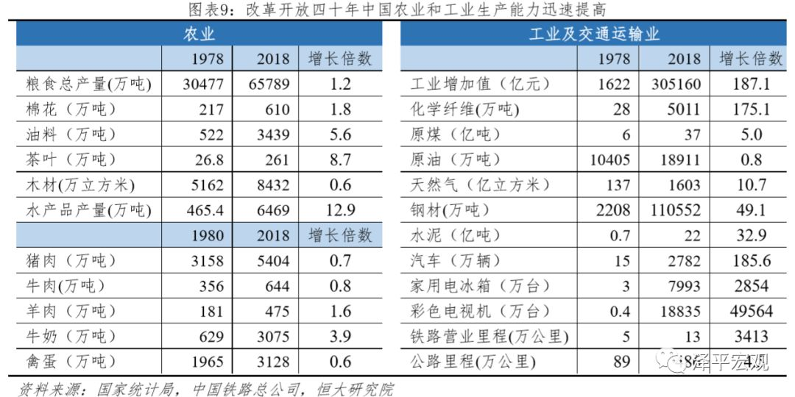
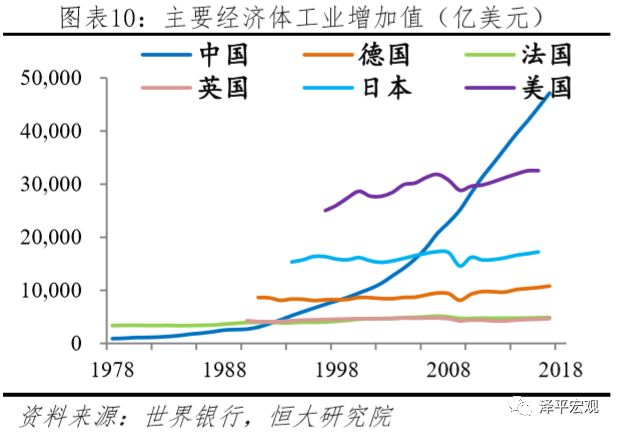
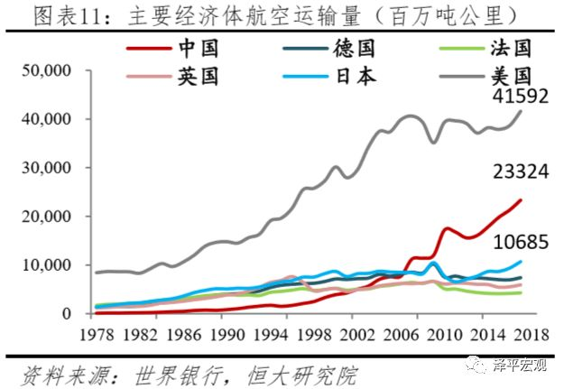
1.3 货物贸易居全球第一，占全球12.8%
改革开放40年中国货物进出口总额增长223倍，总额居世界第一，货物贸易常年保持顺差 。1978年中国货物进出口总额仅为206亿美元,占国际市场份额仅为0.8%，位居世界第29位。随着国内生产能力和对外开放水平的提高，尤其在2001年加入WTO后，中国货物贸易规模相继超越英国、法国、德国和日本。2018年中国进出口总额达4.6万亿美元，较1978年增长223倍，年均增速14.5%；2017年进出口货物贸易额占全球约11.5%，居全球第一。2018年中国货物出口金额为24874亿美元，占全球的12.8%，高于美国的8.5%(德国8%，日本3.8%)，连续十年为全球第一大货物出口国。中国货物进口金额21356亿美元，顺差为3518亿美元。2018年服务进出口总额约7920亿美元，较1978年增长174倍。2018年中国实际使用外商直接投资金额1350亿美元，较1984年增加106倍。
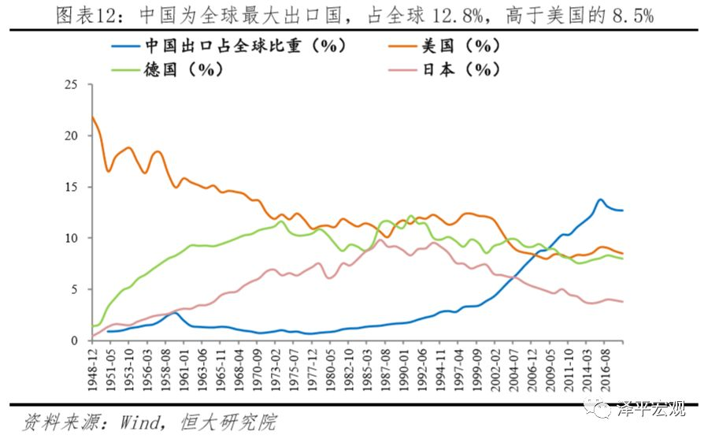
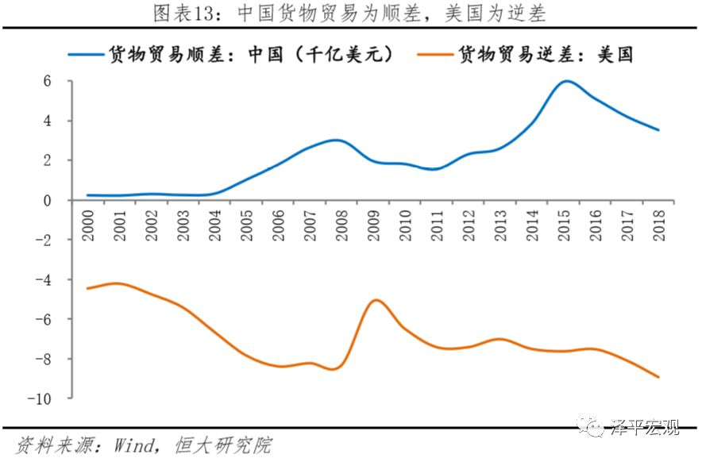
中美两国对进出口的依存度均有下降，中国下降幅度更大。 中国进出口总额与GDP之比自1978年尤其是2000年加入WTO以来，快速提高，在2006年达到最高点64.2%，其后持续下降，2018年为33.9%，进出口依存度下降，较最高点下降了30多个百分点。中国货物贸易顺差整体持续扩大，净出口/GDP在2007年达到7.5%后下行，2018年为2.6%。美国进出口总额/GDP持续增加，到2011年达到最高点30.9%，近年来有所下降，2018年为27.4%。美国净出口在1971年首次转负后，除80年代末因日美贸易战而有所缓和外，大部分年份均为负数，在2006年净出口/GDP达到-5.5%，其后逆差缩窄，2018年为-3%。中美贸易战并未爆发在美国逆差最严重的2006年前后，而在缩窄的2018年，可见缩减贸易逆差只是美方发起贸易战的借口。
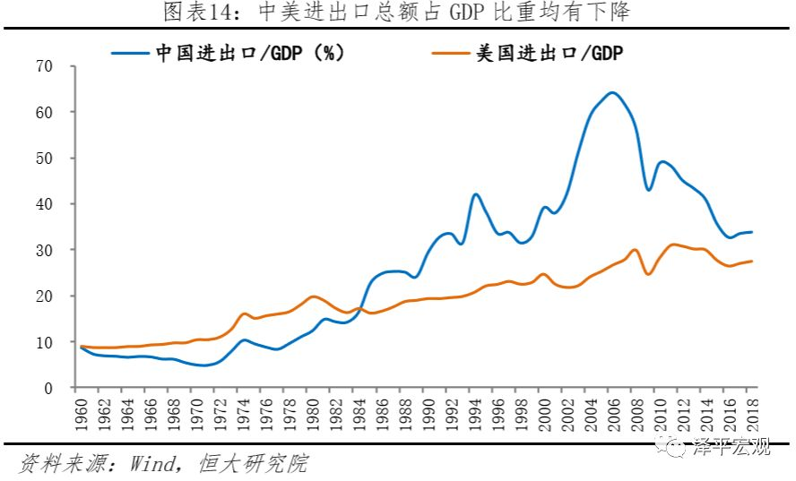
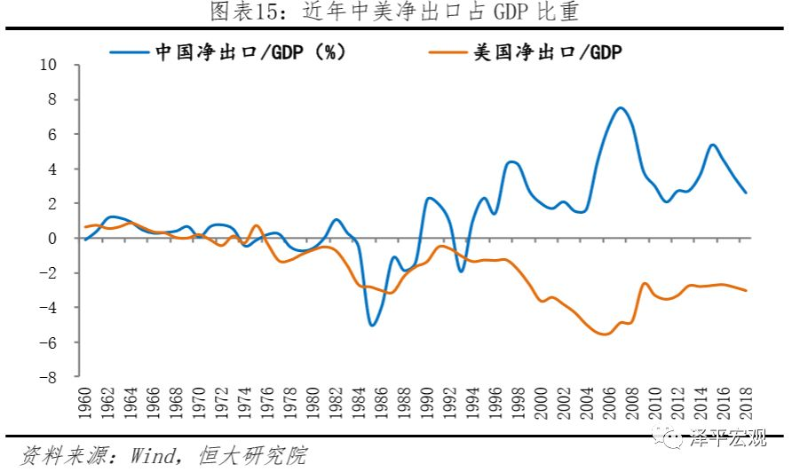
1.4 外汇储备连续十三年全球第一
外汇储备大幅增长，中国从外汇短缺国转变为世界第一外汇储备大国 。1978年，我国外汇储备仅1.67亿美元，居世界第38位。随着我国经济发展水平持续提高，我国经常项目盈余迅速积累，吸引外资持续增加，2006年我国外汇储备突破1万亿美元，超过日本居世界第一位。2018年年末我国外汇储备3.07万亿美元，稳居世界第一位。
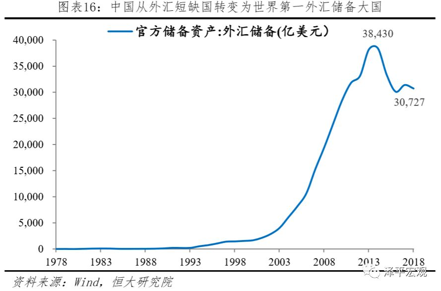
1.5 城镇化率攀升至59.6%，进入城市群都市圈发展阶段
四十年来就业规模增长超3亿，从第一产业持续向二三产业转移，但第一产业就业人员占比仍高于第一产业占GDP比重20.2个百分点。 1978-2018年，中国就业人员从40152万人增加到77586万人，年均增加936万人。大量农村富余劳动力向第二、三产业转移，第三产业逐渐成为吸纳就业的主渠道。1978年，中国第一、二、三产业就业人员占比分别为70.5%、17.3%和12.2%，农业是劳动者就业的主要部门；截至2018年9月末，全国三次产业就业人员比重分别为27.4%、28.0%和44.6%，第一产业就业比重下降43.1个百分点，第二、三产业就业比重分别上升10.7和32.4个百分点。但是第一产业就业人员占比仍大幅高于第一产业占GDP比重，第一产业就业人口向第二、三产业的转移还将持续。
城镇化率稳步提高，进入城市群都市圈发展阶段 。四十年来，中国城镇常住人口从1.7亿快速增至8.3亿，净增加6.6亿，常住人口城镇化率从17.92%提升至59.6%，提高42个百分点。2018年末，我国户籍人口城镇化率为43.4%，与常住人口城镇化率的差距缩小至16.2个百分点。2014年党中央、国务院发布《国家新型城镇化规划（2014-2020年）》提出五大发展目标；2019年国家发改委发布《关于培育发展现代化都市圈的指导意见》，指导培育现代化都市圈；2019年《政府工作报告》确立都市圈城市群发展模式，城镇化进程将加速推进。
**
**
2 中国在人均GDP、生产效率、产业结构、企业竞争力、金融自由度、城市化水平等方面与美国比仍有差距
中国当前为全球第二大经济体，与美国的GDP规模差距不断缩窄，但仍未改变“中国是最大的发展中国家、美国是最大的发达国家”的基本现状。中国人均GDP仅为美国的16%，在生产效率、产业结构、金融发达程度、城市化水平、企业竞争力等方面与美国比仍有较大差距及发展空间。中国必须立足于国情，客观、理性地看待与美国的差距，大力度推进改革开放，提高综合国力。
2.1 人均GDP：差距巨大，中国仅为美国的16%
中美人均GDP差距巨大。 2018年中国人均GDP达到9769美元，美国人均GDP为62590美元，中国仅相当于美国的16%。发达国家门槛是4万美元，人均GDP从8千美元到4万美元，美国用时约29年，日本用时32年，德国用时30年。根据普华永道和世界银行的估算，中国在2050年人均GDP为3.73万美元，美国为8.78万美元，届时差距仍然巨大。按照十九大的规划，中国未来三十年发展蓝图：2020年全面建成小康社会；到2035年，基本实现社会主义现代化；到本世纪中叶，把我国建设成为富强民主文明和谐美丽的社会主义现代化强国。
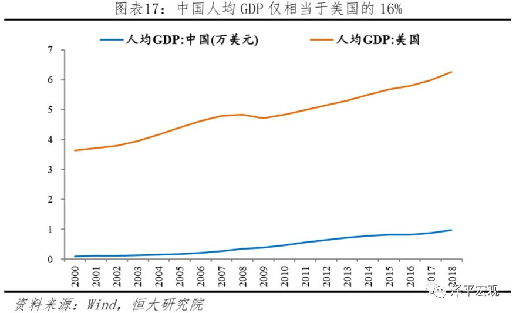
2.2 经济产出效率：中国全要素生产率、劳动生产率均不及美国，每单位能耗创造的GDP低于美国和世界平均水平
中国经济正从高速增长转为高质量增长阶段，更加依赖全要素生产率，但我国经济产出效率仍大幅低于美国。 2014年中国全要素生产率（PPP计价）为美国的43%；2018年中国劳动生产率为1.4万美元，美国11.3万美元，中国约为美国的12%。
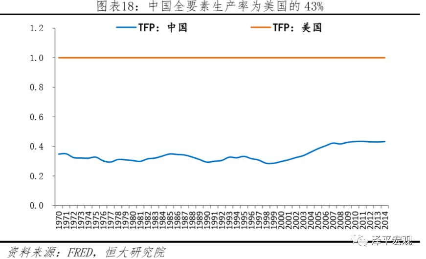
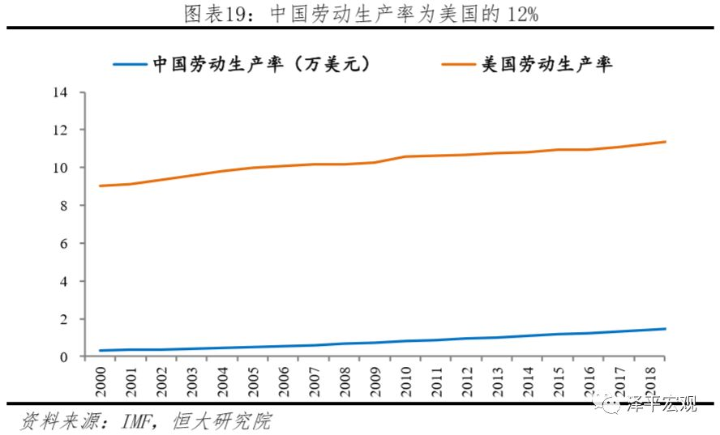
中国GDP的创造效率低于美国和世界平均水平，能耗大，在主要大国中仅高于俄罗斯。 2014年，我国每单位能耗创造的GDP为5.7美元/千克油当量，美国为7.46美元/千克油当量，世界平均水平为7.9美元/千克油当量。
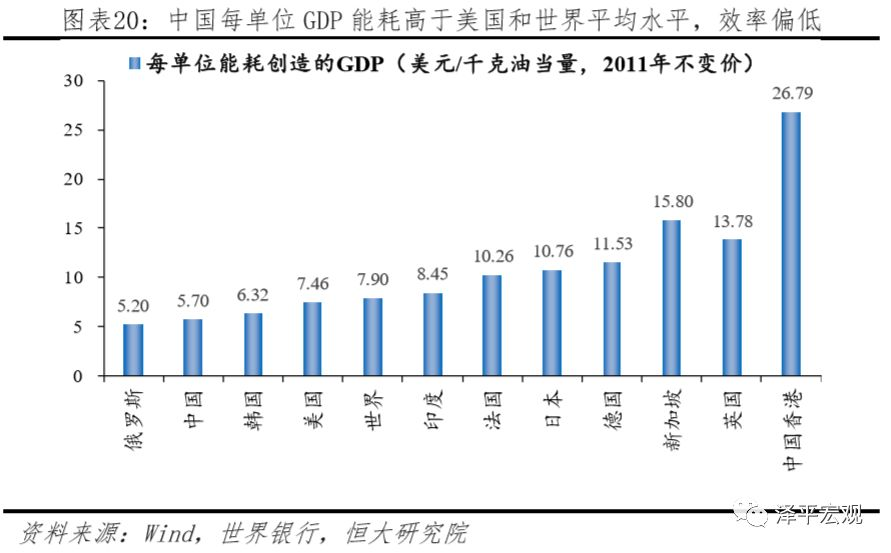
2.3 投资与消费：消费对我国经济的贡献度上升，但投资仍占较大比例；美国为典型的个人消费驱动型经济
按照支出法，2017年中国居民消费率为39.1%，低于美国的69.1%；中国最终消费支出占GDP的53.6%，投资占比依然较高。 十九大报告明确提出“增强消费对经济发展的基础性作用，发挥投资对优化供给结构的关键性作用”。中国居民的消费需求始终没有得到显著提升，居民消费率（居民消费占GDP比重）一直处于偏低水平，特别是2000—2010年间，居民消费率从46.7%持续下滑至35.6%的历史低点。2010年后虽然有所回升但仍然处于相对低位，2017年为39.1%。同期美国的居民消费率高达69.1%，英国也达到了65.5%，欧元区平均为54.6%。即使与经济发展处于相似阶段的国家和地区比，中国的居民消费率也明显偏低，2017年金砖国家（不包括中国）居民消费率平均为64%，高出中国25个百分点。
近期在居民杠杆过高、房价高企、经济形势下行、财富效应消失的背景下，居民消费降级，需要提高居民收入分配占比、提高民生社保财政支出解除后顾之忧、通过政府再分配降低收入差距、通过放宽市场准入和竞争增加优质产品和服务供给，促进居民消费。 2017年中国资本形成总额占比为44.4%，对投资依然高度依赖，推升杠杆率上升；美国的私人投资占比16.6%。
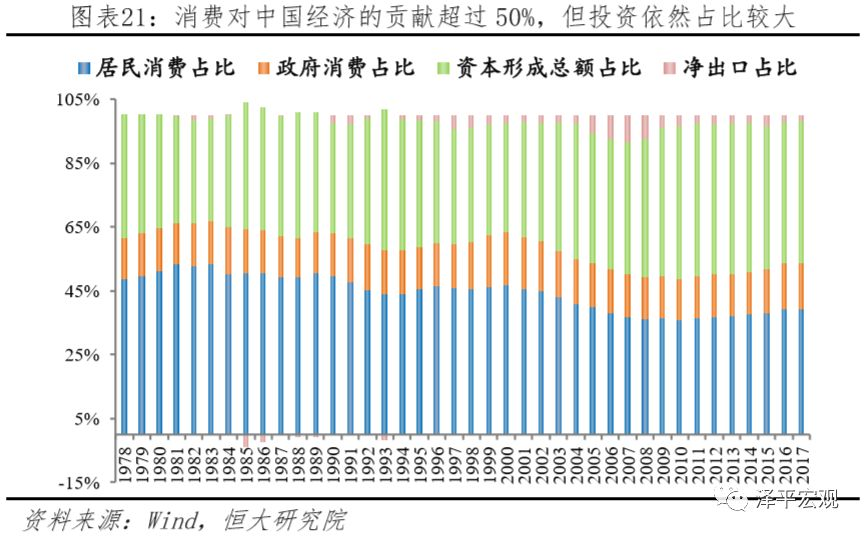
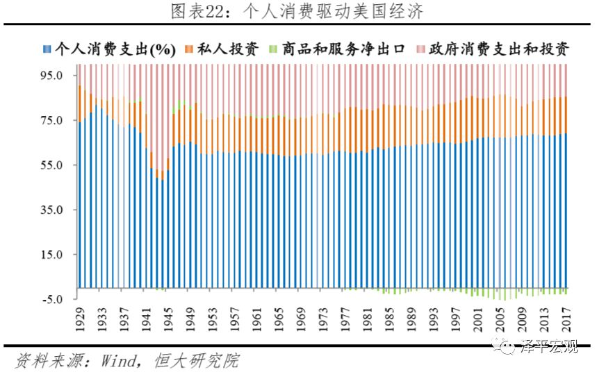
2.4 产业结构：中国第三产业低于美国30个百分点
中国第三产业占比低于美国30个百分点，美国服务业占绝对主导。 2018年我国三大产业占GDP的比重分别为7%、41%和52%，2017年美国三大产业占GDP比为1%、17%和82%。从劳动力分布看，2017年中国三大产业就业人数占比为27%、28.1%和44.9%；美国三大产业就业人数占比为1.7%、18.9%和79.4%。
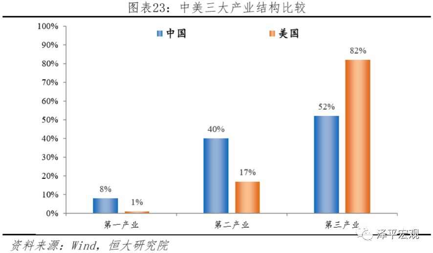
农业方面，中国第一产业效率偏低，机械化、规模化程度偏低，更多依靠化肥。中国大豆、玉米的单产和总产量远低于美国。我国广义粮食自给率84%低于美国的131%。 第一，根据世界银行数据，2017年我国玉米和大豆的单产均为美国的56%。第二，根据联合国粮农组织（FAO）数据，2016年我国玉米产量2.3亿吨，美国为3.8亿吨，中国产量相当于美国的60%；大豆产量1196万吨，仅相当于美国的10%。第三，就粮食自给率而言，2016年我国狭义粮食自给率为95.4%，美国为121%；我国广义粮食自给率为83.9%，美国为131.2%。中国为粮食净进口国，美国为粮食净出口国。第四，中国每公顷耕地消费的化肥为美国的3.7倍，每100公顷耕地的拖拉机台数为美国的3倍。
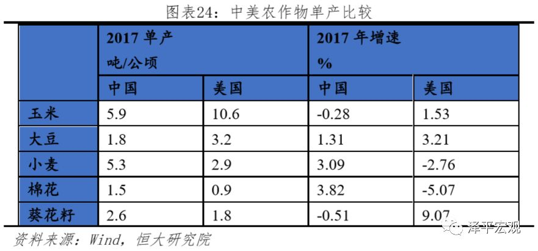
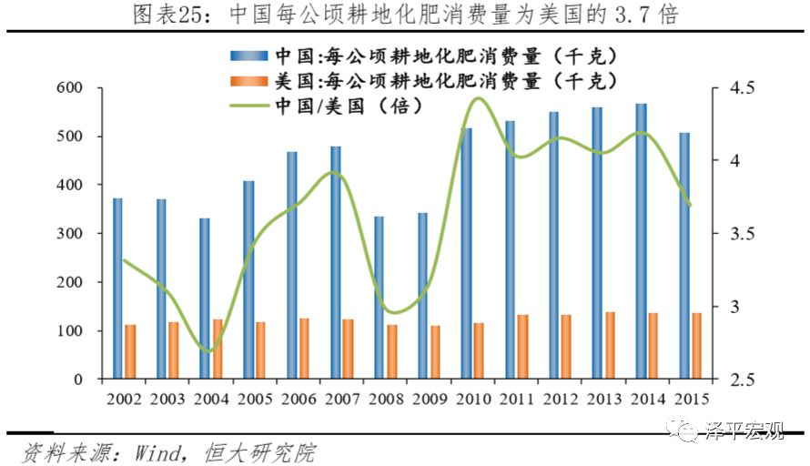
中国高端服务业出口占比低于美国。 2015年中国高端服务(含旅游、知识产权、金融保险和通信信息服务)出口占比为34.6%，比美国低近30个百分点。2017年，中国工业增加值为41452亿美元，占GDP的33.8%，制造业增加值为35932亿美元，占GDP的29.3%；美国工业增加值28692亿美元，占GDP的14.8%，制造业增加值为22443亿美元，占GDP的11.6%。
中国工业产能利用率整体低于美国，2017年因国内去产能而略高于美国。 2013年以来，中国工业产能利用率整体上低于美国，但去产能取得进展，2019年一季度产能利用率达到75.9%，低于美国的78.6%。分行业来看，中国在采矿以及金属冶炼等方面较弱，中国采矿业产能利用率为73.1%，美国为90.3%；中国非金属矿物制品产能利用率为67.4%，美国为67.2%；中国黑色金属冶炼产能利用率为79.2%(有色金属冶炼及加工78.8%)，美国为81%。
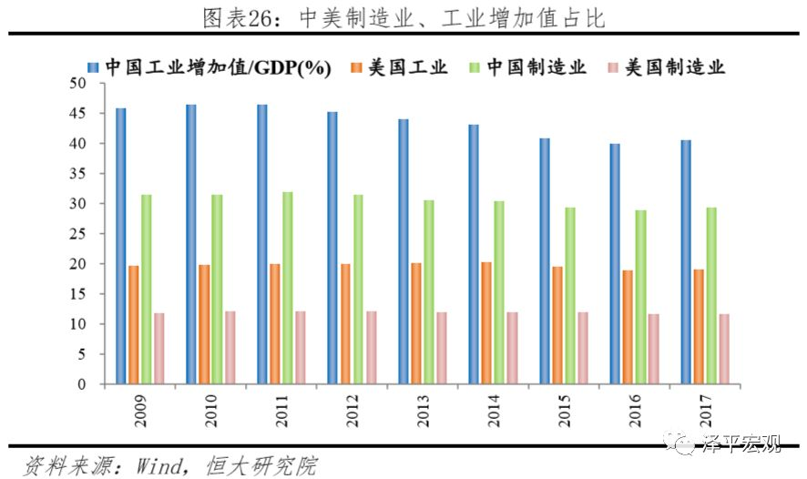
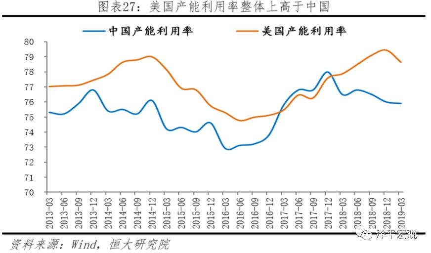
中国金融业占比与美国基本持平，房地产业占比约为美国的一半。 2018年，中国金融业占GDP的7.7%；美国金融保险业占GDP的7.4%。中国、美国的房地产及租赁业占GDP比重分别为9.3%和13.3%；其中，中国、美国房地产业占GDP的比重分别为6.7%和12.2%。
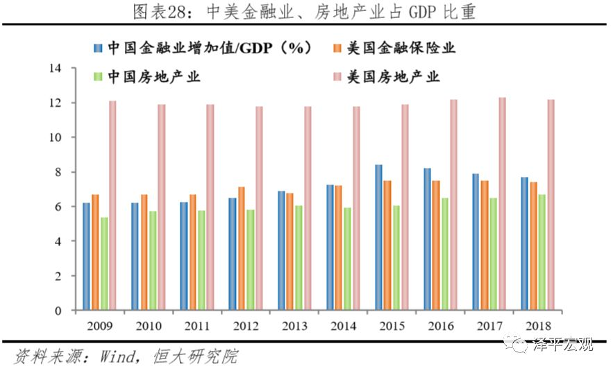
2.5 国际贸易：中国的服务贸易为逆差，美国服务贸易顺差
中国服务贸易逆差，美国服务贸易顺差。 2018年中国服务出口金额2667亿美元，进口金额5248亿美元，贸易逆差为2582亿美元；美国服务出口金额为8284亿美元，进口金额为5592亿美元，贸易顺差2692亿美元，其中，对华服务贸易顺差405亿美元，占美国服务贸易顺差的15%，排名第一位。
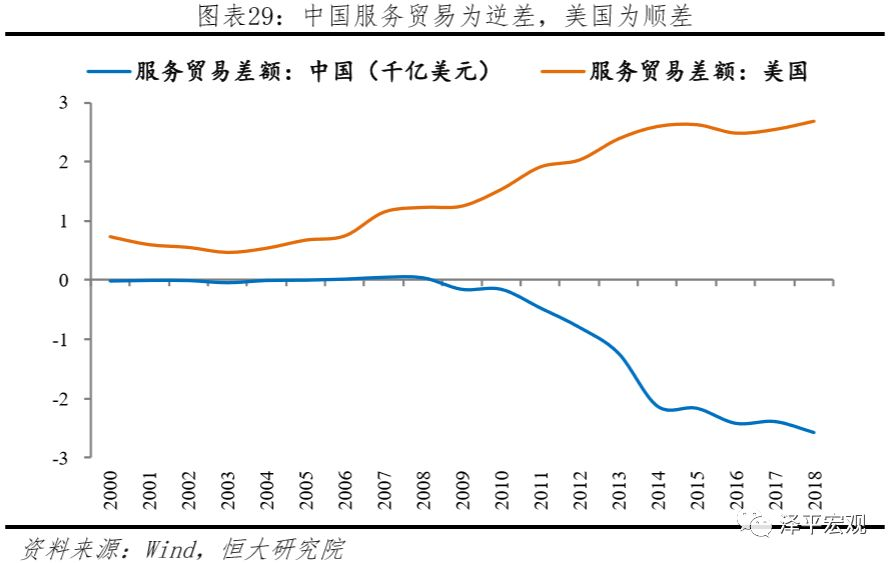
2.6 金融：中国以间接融资为主，美国以直接融资为主，中国金融自由度全球排名靠后，货币超发严重，股票市值约为美国的1/6，全球外汇储备中美元占比高达61.7%
中国以银行主导的间接融资为主，风险偏好低，倾向于向国企、传统低风险行业放贷；美国以直接融资为主，风险投资发达，有利于推动实体经济和高科技的创新。 2017年中国间接融资占比75%，直接融资占比25%；美国直接融资占比达到80%，间接融资约占20%。
中国金融业深化程度不够，自由度偏低，对外开放程度不够。 根据美国传统基金协会2017年公布的金融自由度指数，中国金融自由度为20，全球排名120位，美国金融自由度为70，全球排名20位。
中国M2/GDP比重为美国的2.8倍，货币大量超发。 2018年底中国货币供应量（M2）为26.3万亿美元，占GDP比重193%；美国货币供应量为14万亿美元，占GDP比重69%。
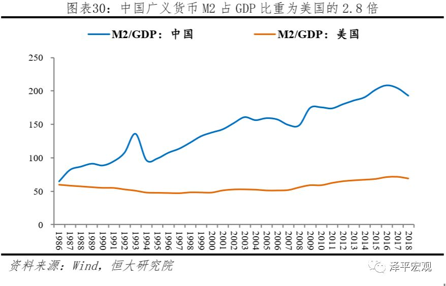
中国股票市场发展较晚，沪深两市总市值仅占美股的1/6。 2018年底沪深两市总市值为6.6万亿美元，占GDP比重为48.5%；美股总市值已达37.8万亿美元，占GDP比重为184.3%。沪深两市上市公司共3584家，美股上市公司总数4875家。 从股票发行与退市制度看， 中国实行IPO审批制，公司上市程序复杂、用时较长，市场机制作用发挥不充分；美国实行注册制，通过发行人和投资者的价格博弈可充分发挥市场机制作用。 从投资结构看， 中国股市由个人投资者主导，中小投资者（证券账户资产量低于50万元)占比75.1%，羊群效应和非理性特征明显；美国股市由机构投资者主导，侧重长期价值投资。 从股指行情看， A股表现出牛短熊长特征，上证综指在经过几轮暴涨暴跌后长期趋势并不明显；美国表现出“慢牛行情”，长期呈上涨趋势，世界银行数据显示，2017年中国股市换手率为197%，美国股市换手率为116%。 分行业看， 中国各行业市值均低于美国，但材料、工业、房地产和金融行业相对市值较高，电信业务市值与美国差距较大。
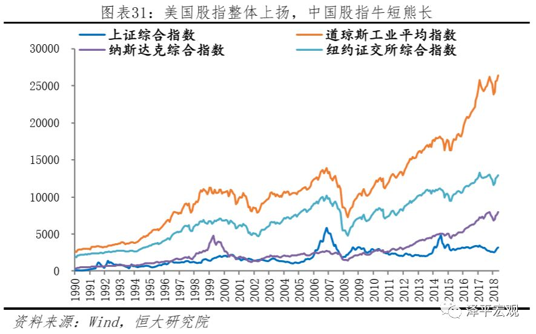
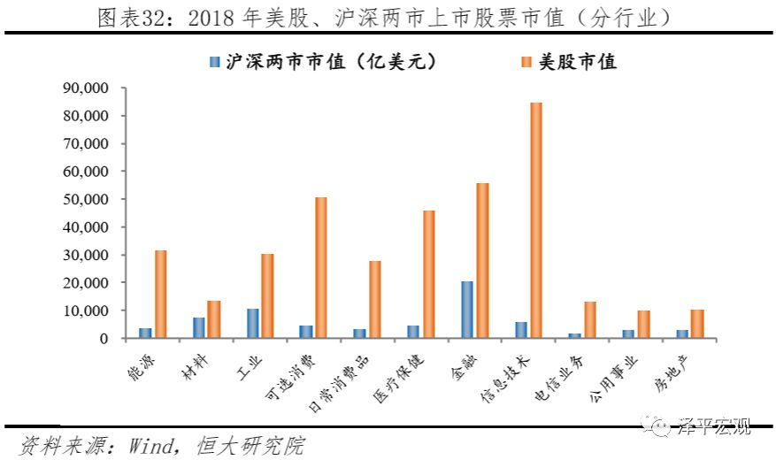
美元为国际储备货币，在全球外汇储备中占比高达61.7%，人民币占比仅为1.9%。 2017年中国IMF投票权份额6.41%，美国为17.46%，具有一票否决权。2018年底中国外汇储备为30727亿美元，美国外汇储备为419亿美元，中国为全球第一大外汇储备国，占比约27%。2018年全球外汇储备中，美元占比61.7%，人民币占比为1.9%，欧元占比20.7%，日元占比5.2%，英镑占比4.4%，加元占比1.8%。
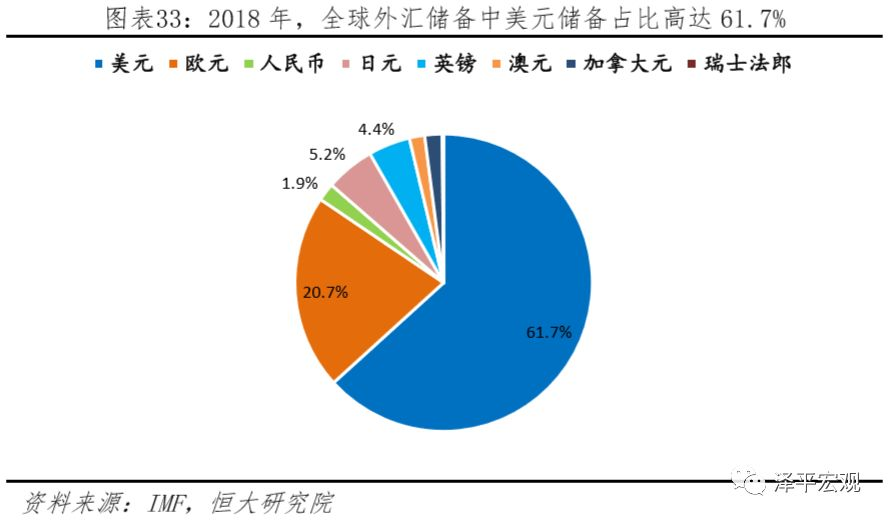
中国总储蓄率高于美国，但美国贷款利率低于中国，吸引外商投资规模高于中国。 2016年，中国总储蓄率47%；美国总储蓄率为18%。2018年，中国短期贷款利率4.35%，美国联邦基金利率2.4%。2017年，中国吸引外商直接投资1363亿美元，美国吸引外商直接投资2773亿美元。2017年中国对外投资1019亿美元，美国对外投资4244亿美元。
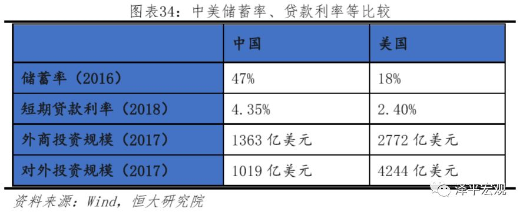
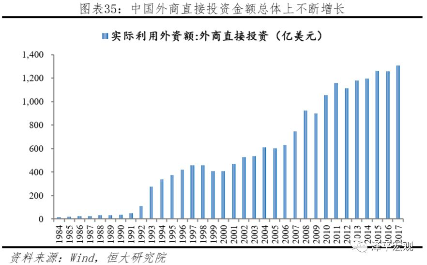
2.7 企业竞争力：中国进入世界500强的数量比美国少6家，国企多民企少，集中在资源垄断性行业及金融部门，美国在IT科技生命健康科技领域上榜企业较多
中国进入世界500强的企业数量不及美国，国企多民企少，集中在资源垄断性行业及金融部门，美国在生命健康领域上榜企业较多。 2018《财富》世界500强企业排名显示，中国（含中国台湾）上榜公司数量连续11年增长，达到120家，其中，国企有83家，民企仅37家；美国有126家上榜。中国有三家企业进入榜单前十名：国家电网（第2名）、中国石化（第3名）、中国石油（第4名）；美国沃尔玛零售商继续位列世界500强榜首。
从行业分布看，中国上榜的企业主要集中在金融业、能源、炼油、采矿、房地产和工程与建筑行业，生命健康、食品生产等行业上榜企业较少；美国上榜企业分布在金融、能源、电子、通信、IT科技等行业。 电子通讯行业中，中国有15家（鸿海、中国移动、华为、中国电信、联通等），美国有23家（Apple、AT&T、Microsoft、Comcast、IBM等）；食品生产、生命健康行业，中国均无上榜企业，美国分别有10家食品生产类企业和12家生命健康类企业上榜。
从盈利看，美国苹果公司排在第一位，利润483亿美元，中国进入利润榜前十的是四大国有银行。 中国10家上榜银行平均利润高达179亿美元，利润总额占111家中国（包括香港，除中国台湾地区）上榜公司总利润的50.7%。美国上榜的8家银行平均利润为96亿美元，而利润总额仅占126家美国上榜公司的11.7%。
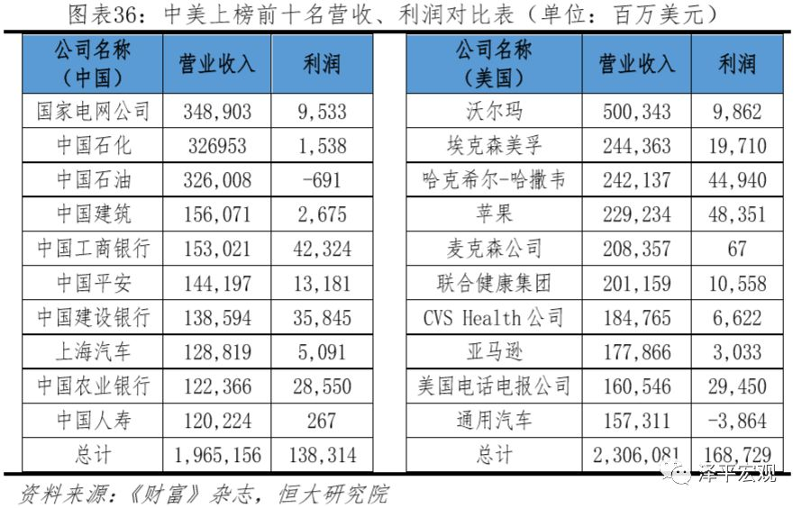
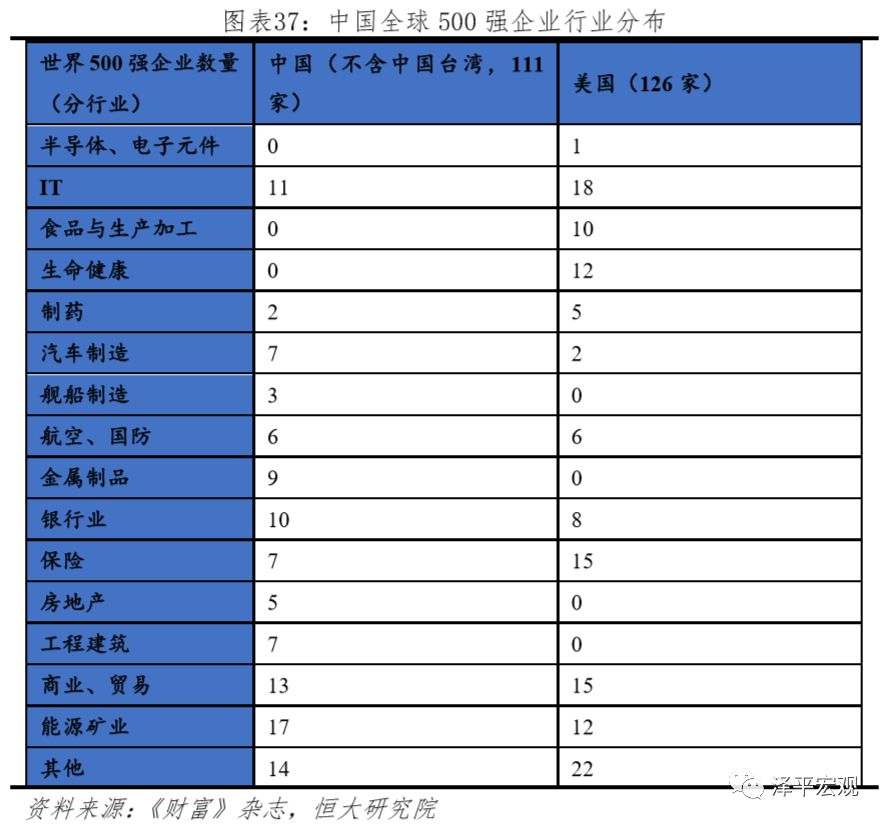
2.8 人口与就业：中国人口总量为美国的4.3倍，但老龄化率增速较快，未富先老
中国人口总量为美国的4.2倍，老龄化率增速较快。 2018年末我国总人口为13.95亿，美国为3.3亿，中国约为美国的4倍；中国人口密度为每平方公里145人，美国为36人，中国约为美国的4倍；我国老龄化率的增速快于美国，2017年中国人口老龄化率为11.4%，过去十年人口老龄化率增速0.3个百分点/年，美国人口老龄化率15.4%，人口老龄化率增速为0.28个百分点/年；中美两国的男女比例为1.05和0.97。
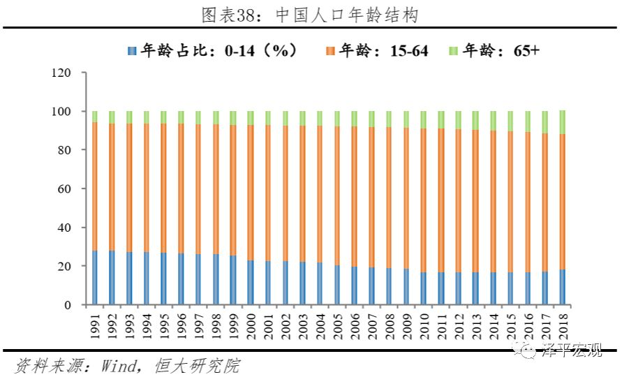
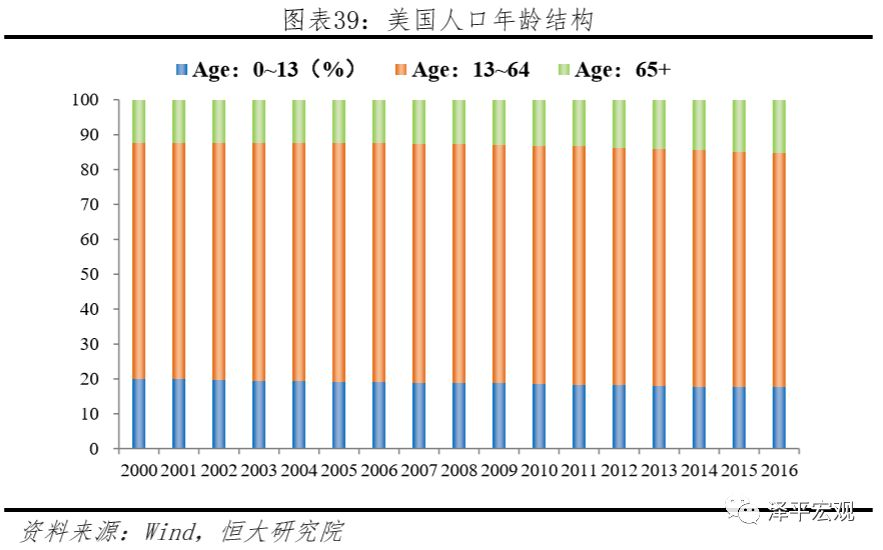
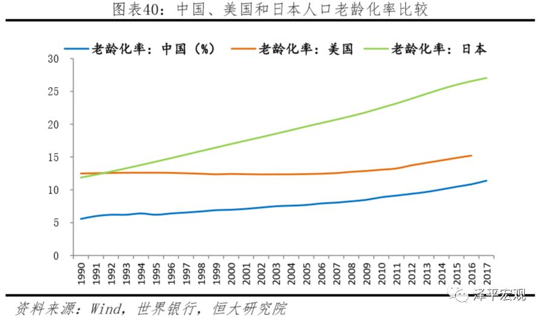
2.9 城市：中国城市化率低于美国23个百分点，城市圈（群）的集聚效应低于美国
中国常住人口城市化率低于美国，户籍城市化率更低，应加快推进农民工市民化进程。中国五大城市群的集聚效应低于美国。 2018年中国的城市化率为59.1%，美国为82.3%。美国的大西洋沿岸城市群、五大湖城市群、西海岸城市群聚集的人口占全国比重分别为21.8%、14.5%和12.1%，高于中国京津冀、长三角和珠三角人口占全国比重的8%、11%和4.4%。美国三大主要城市群的GDP占全国比重分别为25.6%、13.8%和14.1%，高于中国三大主要城市群的10%、20%和9.2%。
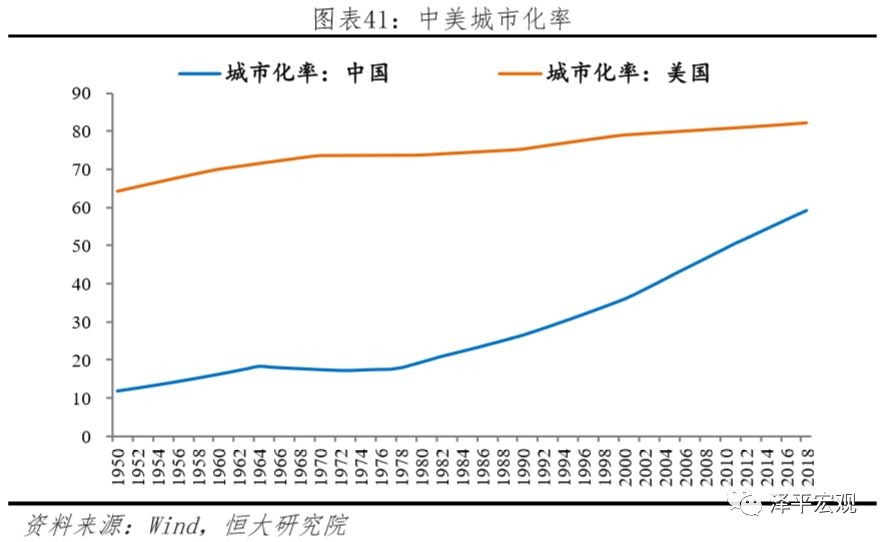
2.9.1 美国主要城市群的特征
（1）波士顿-华盛顿城市群：美国最大的商业贸易和国际金融中心
以波士顿、纽约、费城、巴尔的摩、华盛顿等11个州组成的超大型城市群位于美东海岸。该城市群总面积约45万平方公里，占美国面积的4.7%；人口7031万，占美国总人口的21.8%，是美国人口密度最高的地区；GDP达到4.7万亿美元，占美国GDP的25.6%。
（2）芝加哥-匹兹堡城市群：美国最大的制造业中心
以芝加哥、匹兹堡、克利夫兰、托利多、底特律等35个城市组成的城市群，分布于美国中部五大湖沿岸地区。该城市群区域总面积约63.4万平方公里，占美国面积的6.6%；人口4676万，占美国总人口的14.5%；GDP达到2.56万亿美元，占美国GDP的13.8%。
（3）圣地亚哥-旧金山城市群：美国“科技之城”
美国第三大城市群位于西部太平洋沿岸地区，包括南加州、北加州两大城市群，分别以洛杉矶、旧金山为中心，辐射整个加利福尼亚州。区域总面积约40.4万平方公里，占美国面积的4.2%；人口3925万，占美国总人口的12.1%；GDP达到2.6万亿美元，占美国GDP的14.1%。
2.9.2 中国主要城市群的特征
（1）京津冀城市群
京津冀城市群由北京、天津两个直辖市和河北省13个地级市组成。区域总面积约21.5万平方公里，占中国国土面积的2.3%；2017年常住人口1.1亿，占中国总人口的8%；GDP达到8.3万亿元（1.2万亿美元），占中国GDP的10%。
（2）长三角城市群
长三角城市群包括上海、江苏省、浙江省共26个城市。区域总面积约21.3万平方公里，占中国国土面积的2.2%；2017年常住人口1.5亿，占中国总人口的11%；GDP达到16.5万亿元（2.4万亿美元），占中国GDP的20%。
（3）珠三角城市群
珠三角城市群包括广州、深圳、珠海、佛山、东莞等9个城市。区域总面积约5.5万平方公里，占中国国土面积的0.6%，2017年常住人口6151万，占中国总人口的4.4%，GDP达到7.6万亿元（1.1万亿美元），占中国GDP的9.2%。
2.10资源能源储备：中国人均耕地和水资源少于美国，能源自给率逐年下滑，能源进口占比约为美国的2倍
我国耕地面积为美国的78%，人均耕地面积为美国的19%，人均可再生水资源为美国的23%，能源自给率逐年下滑，能源进口占比约为美国的2倍。 世界银行数据显示，2015年美国耕地面积为152.3万平方公里，占土地面积的16.65%，是世界上耕地面积最大的国家，人均耕地面积为0.47公顷。我国耕地面积为119万平方公里(约合17.85亿亩)，占土地面积的12.68%，人均0.09公顷。美国耕地面积和人均耕地面积分别为我国的1.3和5.2倍。2014年，我国人均可再生水资源为2062立方米/人，相当于美国8846立方米/人的23%。我国能源消耗进口占比逐年上升，自给率逐年下降，与美国近年页岩气革命以来形成鲜明对比，2014年中国能源进口占比为15.02%，相当于美国7.31%的2倍。
中国的原油产量及自给率仅相当于美国的1/3和1/2。 2017年中国和美国的原油自给率分别是32.2%和65.5%，中国仅为美国的一半；中国和美国的原油产量分别为1.9和5.7亿吨，中国是美国的1/3；中国和美国原油消费量分别为5.9和8.7亿吨，中国是美国的2/3；2013年中国页岩气藏量134万亿立方米，美国页岩气藏量131.5万亿立方米；中国技术可开采量32万亿立方米，美国为33万亿立方米。
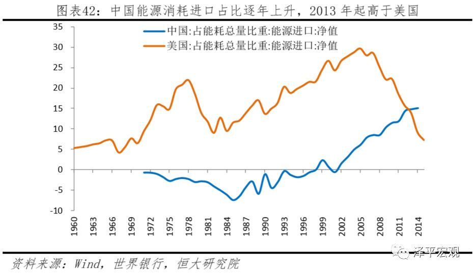
2.11财政：中国宏观税负略高于美国，政府债务率低于美国，考虑到隐性债务较高和社保水平偏低，财政压力较大
2015年中国的全口径宏观税负为33.9%，略高于美国的33%。中国的财政赤字率和政府债务率低于美国，但是隐性债务较多，中国的社会保障和基础设施建设水平仍低于美国。2018年中国财政赤字率为4.2%（考虑结转结余和调入资金使用，官方赤字为2.6%），与美国赤字率4.2%基本相当。根据BIS数据，2017年中国政府的杠杆率为47%，低于美国的97%。
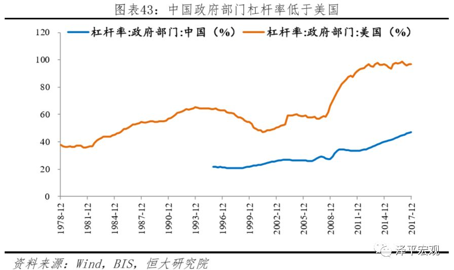
2.12军费：美国军费开支全球第一，为中国的3倍
当前，新兴国家的崛起在很大程度上是以经济大国的身份崛起，其政治影响力、军事实力相对于经济实力而言还存在很大差距。 根据瑞典斯德哥尔摩国际和平研究所的数据，2017年中国军费开支2280亿美元，排在第二位，占GDP比重1.9%；美国军费开支为6950亿美元，占GDP比重为3.6%，占全球40%，是中国的3倍。沙特694亿美元、俄罗斯663亿美元、印度640亿美元、法国578亿美元、英国470亿美元、日本454亿美元。
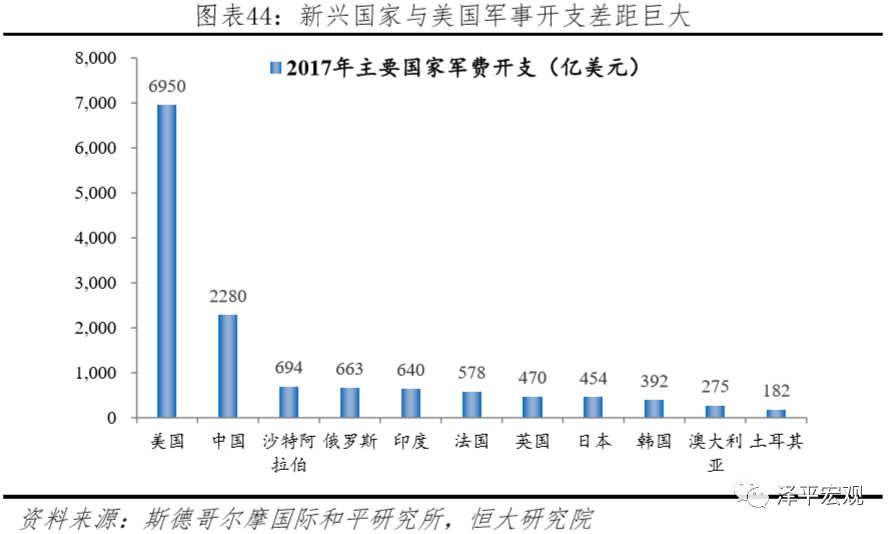
**
**
3 最好的投资机会就在中国
在看到成就和差距的同时，我们要清醒深刻地认识到中国经济发展的巨大潜力和优势，只要下决心推动新一轮改革开放，最好的投资机会就在中国：中国有全球最大的统一市场（14亿人口），有全球最大的中等收入群体（4亿人群）；中国的城镇化进程距离发达国家仍有20个百分点的空间，潜力大；中国的劳动力资源近9亿人，就业人员7亿多，受过高等教育和职业教育的高素质人才有1.7亿，每年大学毕业生有800多万，人口红利转向人才红利；中国的新经济迅速崛起，独角兽数量仅次于美国；中国GDP增速6%以上，是美国的2-3倍；新一轮改革开放将开启新周期，释放巨大活力。
3.1 中国14亿人，拥有全球规模最大的统一市场和中等收入群体
中国有覆盖14亿人口的统一市场，商品、人员、服务和资本均可自由流动，产品的研发、生产、物流、销售等环节都存在巨大的规模效应。以移动互联网行业为例，中国网民数量8.3亿人，同比增速达到7.5%，而美国网民数量2.5亿人，同比增速0.9%，不及中国；我国在移动互联网领域的高速发展很大程度上得益于极大的市场规模，产品一旦成功不仅能够获得广泛的影响力，还能得到大量用户的反馈，帮助企业快速迭代更新。
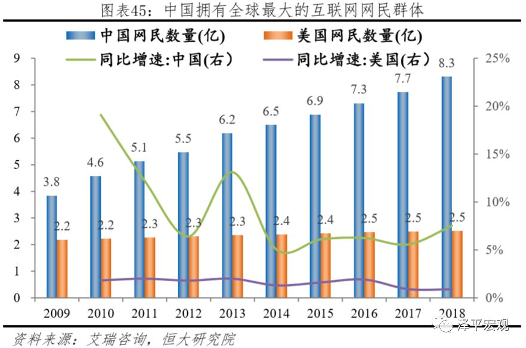
3.2 劳动力资源近9亿人，接受高等教育和职业教育的高素质人才达1.7亿，人口红利转向人才红利
2018年末中国劳动力年龄人口约9亿，受过高等教育和职业教育的高素质人才有1.7亿，每年有约800万大学生毕业。中国过去10年培养了约7000多万大学生，包括了大量的技术人才，这使得近年来中国在产业创新，基础科学等领域逐渐开始取得重要进展，一些环节如5G等已经开始取得突破。尽管中国总人口已跨过刘易斯拐点，但人口素质的上升使得中国孕育了新一轮、更大的人才(工程师)红利，成为中国经济长期发展的重要人才储备。
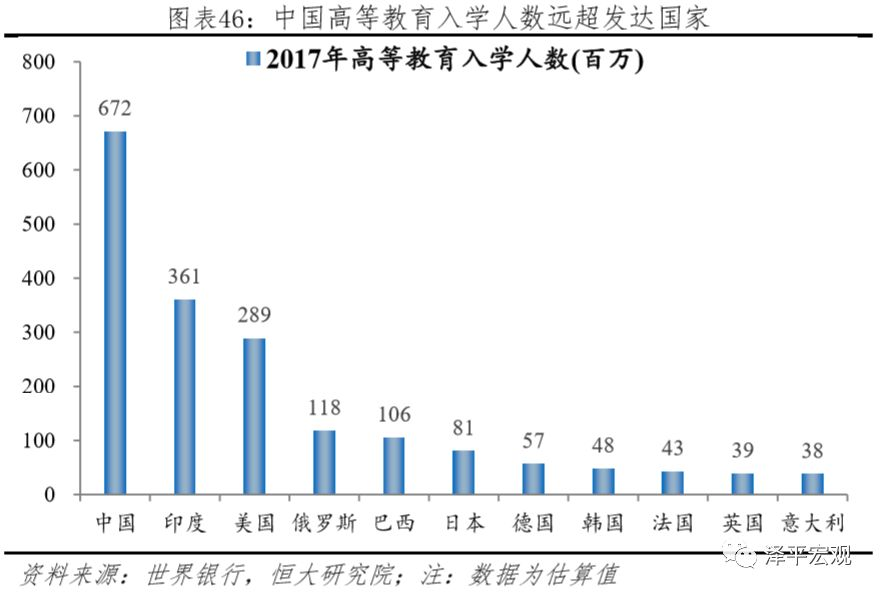
3.3 创新创业十分活跃，中国新经济独角兽企业数量占全球28%，仅次于美国
中国新经济具有旺盛活力，跨界创新蓬勃发展。 2018年，信息服务业同比增速高达30.7%。从子行业来看，移动游戏、网络购物、约车平台、旅游平台、智能家居、云计算等众多子行业都获得了20%-50%的增长。每个子行业都诞生了一批独角兽企业，使得中国企业在全球创新创业领域的话语权迅速提升。2018年全球新经济独角兽企业美国和中国分别占比48%和28%，中美独角兽企业占全球76%。从估值看，2018年中国独角兽平均估值约为59.6亿美元，高于美国的36.8亿美元。未来信息服务业与人工智能、AR、VR技术结合仍将释放巨大的增长潜力，为中国经济发展提供重要动能。
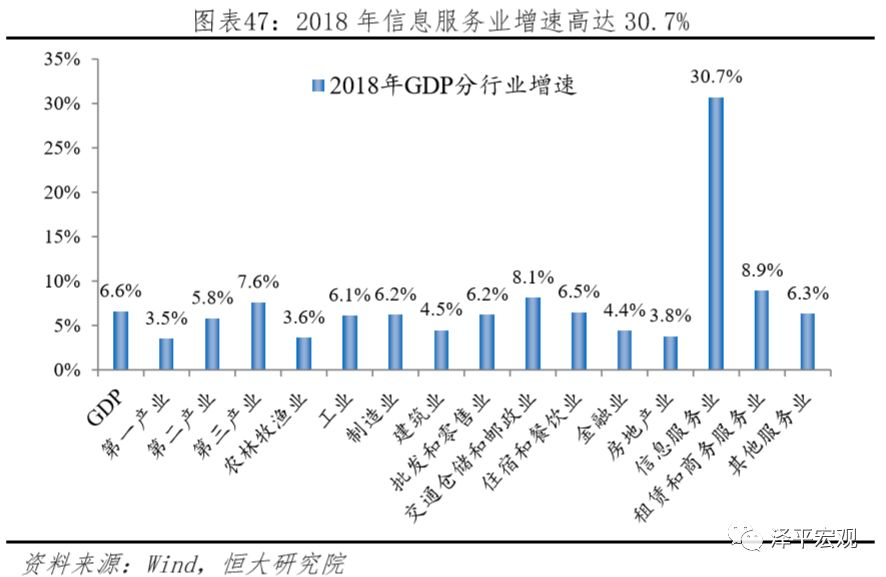
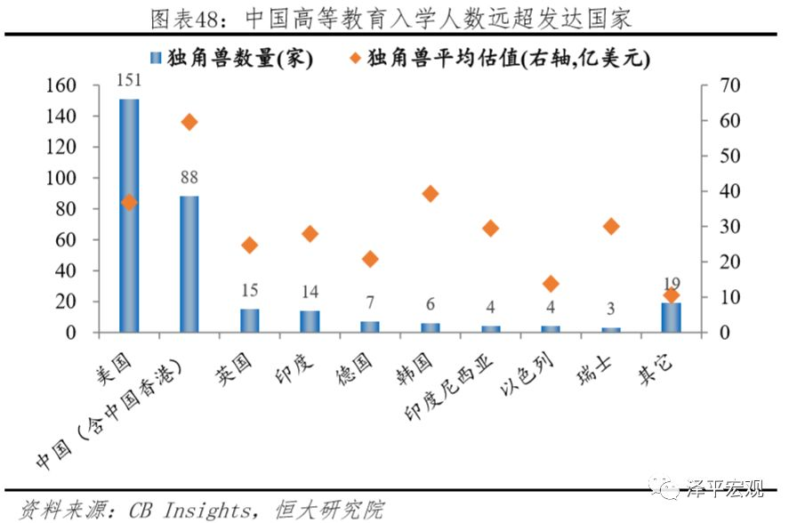
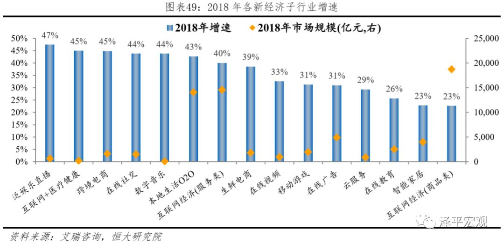
中国不断加大研发投入，在部分高科技领域与发达国家的差距逐渐缩小。 中国在芯片制造、软件开发、航空等领域与以美国为代表的发达国家仍然存在差距，但中国在持续推进研发。 以通信行业为例， 当前全球四大通信设备巨头华为、爱立信、诺基亚、中兴，中国占据其二。华为2017年销售额925.5亿美元，研发投入137.9亿美元，大幅超越传统通信设备巨头爱立信与诺基亚。与美国无线通信巨头高通相比，华为的收入与研发投入体量同样领先。在过去十年内，华为在研发领域累计投入近4000亿人民币，目前拥有超过7万份专利（超过90%是发明专利）。世界知识产权组织数据显示，2018年华为提交国际专利申请5405件，创下单一公司国际专利申请最高记录。在5G的标准制定上，华为也开始崭露头角，中国在全球通信领域话语权逐渐提高。
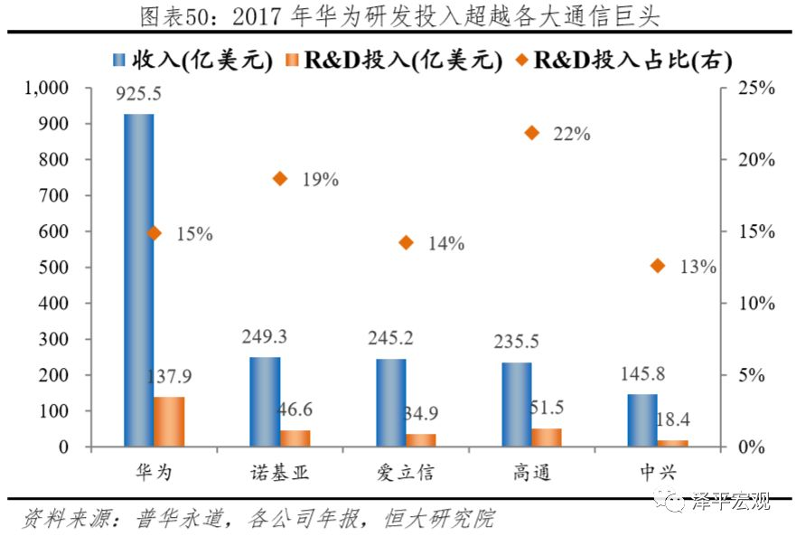
3.4 以六大领域为突破口，新一轮改革开放将开启新周期
最大的改革是开放，通过开放实现国企、民企、外企等市场主体的公平竞争和优胜劣汰。 中国从来都不怕开放，怕的是不开放。改革开放进入深水区。事业都是人干出来的，空谈误国，实干兴邦。未来应以六大改革未突破口，调动各方面积极性。2018年底的中央经济工作会议和2019年的两会释放出强烈的市场化改革和简政放权的信号，供给侧改革更注重市场化、法治化，对去年的一些错误认识和做法予以纠偏，内涵拓展为“巩固、增强、提升、畅通”，新一轮改革开放正起航。
1 、建立高质量发展的考核体系，鼓励地方试点，调动地方政府积极性；
2 、全面放开汽车、金融、石油、电力等行业管制，竞争中性，调动企业家积极性；
3 、以中美贸易谈判为契机，降低关税、放开行业投资限制、加强知识产权保护，积极推动建立中美自贸区，调动外资积极性；
4 、大规模减税降费，从碎片化、特惠式减税转向一揽子、普惠式减税， 切实落实降低增值税税率和社保缴费率，提高企业和居民的获得感。同时，通过简政放权和机构改革，压缩冗余人员及支出，调动企业和居民的积极性；
5 、大力发展多层次资本市场，减少行政干预的同时加强法治监管，鼓励并购重组，推动以信息披露、严惩重罚、退市制度等为核心的注册制，调动新经济和PE/VC/风投的积极性；
6 、建立居住导向的住房制度和长效机制，关键是人地挂钩和金融稳健。 尽快改变过去“控制大城市人口、积极发展中小城市和小城镇、区域均衡发展”的城镇化思路，确立以大城市为引领的都市圈城市群的城市规划区域规划战略，要促进人口、土地、技术等要素自由充分流动，调动各区域积极性。
_ ** _ 本文经授权转载**
更多阅读
【重磅速递】约瑟夫·奈：美国霸权的兴衰：从威尔逊到特朗普 | 国政学人
【重磅推荐】巴里·布赞：英国学派视角下的中国崛起 | 国政学人
【重磅速递】米尔斯海默：注定失败：自由主义国际秩序的兴衰 | 国政学人
【国际组织】IO杂志：联合国维和行动的武力运用问题研究 | 国政学人